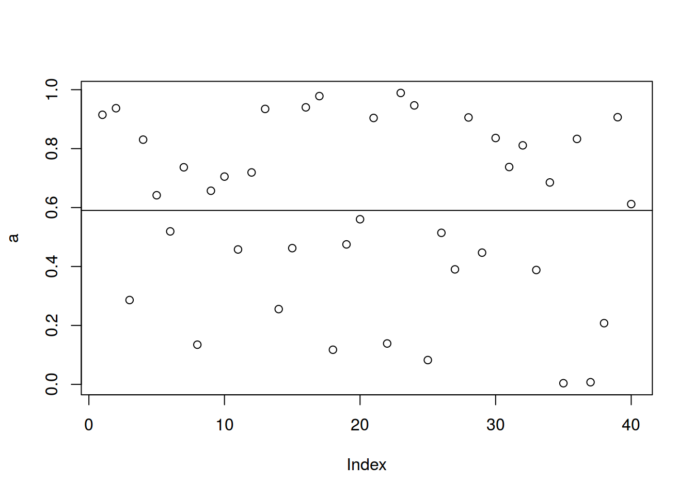

a <- sin(1:100)
b <- c(-1, -0.5, 0, 0.5, 1)
table(cut(a, breaks = b))##
## (-1,-0.5] (-0.5,0] (0,0.5] (0.5,1]
## 35 15 16 34weighted.mean(x = c(10, 9, 9),
w = c(0.6, 0.2, 0.2))## [1] 9.6set.seed(42)
a <- runif(40)
mean(a)## [1] 0.590224plot(a)
abline(h = mean(a))
a - mean(a)## [1] 0.32458202 0.34685139 -0.30408449 0.24022361 0.05152150
## [6] -0.07112807 0.14636429 -0.45555742 0.06676827 0.11484076
## [11] -0.13248224 0.12888823 0.34444823 -0.33479520 -0.12793120
## [16] 0.34979050 0.38800241 -0.47273666 -0.11522694 -0.02989127
## [21] 0.31380737 -0.45151385 0.39866771 0.35644421 -0.50778646
## [26] -0.07601224 -0.20002055 0.31551411 -0.14325439 0.24578024
## [31] 0.14737160 0.22083112 -0.20211574 0.09494571 -0.58627568
## [36] 0.24269206 -0.58288987 -0.38256505 0.31637739 0.02155462(a - mean(a))^2## [1] 0.1053534893 0.1203058883 0.0924673748 0.0577073804 0.0026544647
## [6] 0.0050592026 0.0214225064 0.2075325664 0.0044580018 0.0131884009
## [11] 0.0175515452 0.0166121760 0.1186445805 0.1120878237 0.0163663915
## [16] 0.1223533951 0.1505458681 0.2234799491 0.0132772476 0.0008934883
## [21] 0.0984750631 0.2038647597 0.1589359413 0.1270524759 0.2578470919
## [26] 0.0057778601 0.0400082220 0.0995491535 0.0205218211 0.0604079259
## [31] 0.0217183875 0.0487663837 0.0408507716 0.0090146875 0.3437191756
## [36] 0.0588994356 0.3397606054 0.1463560161 0.1000946509 0.0004646017sum((a - mean(a))^2)/length(a) # средние## [1] 0.09010117(sum((a - mean(a))^2)/length(a))^(1/2)## [1] 0.3001686(sum((a - mean(a))^2)/(length(a)-1))^(1/2)## [1] 0.3039925sd(a) == (sum((a - mean(a))^2)/(length(a)-1))^(1/2)## [1] TRUEquantile(a, 0.4)## 40%
## 0.5171423v <- c('m', 'f', 'm', 'm', 'f', 'f', 'f', 'f')
df <- data.frame(sex = c('m', 'f', 'm', 'm', 'f', 'f', 'f', 'f'),
hand = c('lf', 'rh', 'rh', 'rh', 'rh', 'lf', 'am', 'rh'))
table(v)## v
## f m
## 5 3table(df)## hand
## sex am lf rh
## f 1 1 3
## m 0 1 2prop.table(table(v))## v
## f m
## 0.625 0.375prop.table(c(1, 2))## [1] 0.3333333 0.6666667prop.table(table(df))## hand
## sex am lf rh
## f 0.125 0.125 0.375
## m 0.000 0.125 0.250prop.table(table(df))*100## hand
## sex am lf rh
## f 12.5 12.5 37.5
## m 0.0 12.5 25.0round(prop.table(table(df))*100)## hand
## sex am lf rh
## f 12 12 38
## m 0 12 25library(tidyverse)
words <- read_csv("https://goo.gl/a4xNwj")
words <- c(words$trans_english, words$trans_russian)
words <-sapply(words, function(x){unlist(strsplit(x, ",| "))[1]})
words <- data.frame(words = words, stringsAsFactors = F)
str(words)## 'data.frame': 2620 obs. of 1 variable:
## $ words: chr "often" "always" "ready" "cease" ...